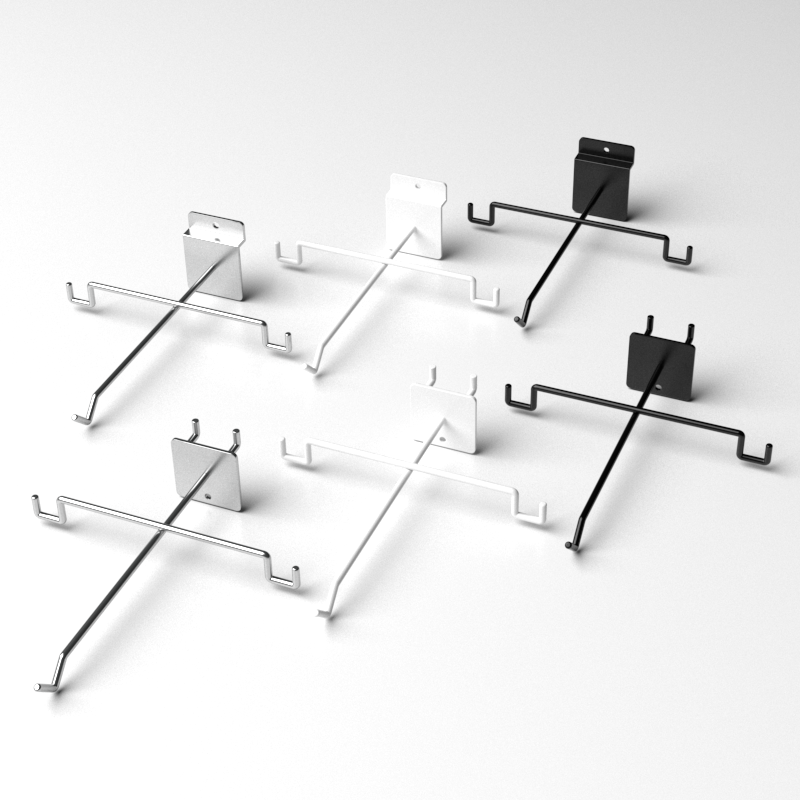

2025 有孔ボード用図面
Eyewear Display Hook (pegboard) の図面には 160、175、150.93、128、25.4 mm などの寸法が見られ、レーザー切断した掛片をパネル背面に溶接する注記があります。消水孔 Ø4 は下方へ移動。図面版の根拠であり、すべての SKU への一括適用ではありません。
EYEWEAR RETAIL DISPLAY HARDWARE
25 mm pitch と Ø6 mm 孔の図面根拠がある眼鏡展示フック。眼鏡店、スラットウォール、有孔ボードの展示に対応します。
眼鏡フックを相談する名称： メガネディスプレイフック／Optical Display Hooks／眼鏡展示掛鉤

25 mm pitch と Ø6 mm 孔の図面根拠がある眼鏡展示フック。眼鏡店、スラットウォール、有孔ボードの展示に対応します。
Source evidence: Eyewear Display Hook drawing set; the visible drawing marks 25 mm pitch and Ø6 mm holes.
Eyewear Display Hook (pegboard) の図面には 160、175、150.93、128、25.4 mm などの寸法が見られ、レーザー切断した掛片をパネル背面に溶接する注記があります。消水孔 Ø4 は下方へ移動。図面版の根拠であり、すべての SKU への一括適用ではありません。
図面には t2.0 鉄板、横方向 4.0 mm 鉄線、5.0 mm 吊り孔、ブラック粉体塗装、端部面取り、約 2° の上向き角度が記録されています。外包 145／175 mm と 40 mm の取付プレート寸法も見られます。
原画像ファイル名には EYEHK-010B、EYEHK-010C、EYEHK-010W、EYEHK-020B、EYEHK-020C、EYEHK-020W が見られます。ファイル名の識別情報であり、B／C／W を正式な色コードや現行供給 SKU と推定しません。
図面には見積数量 1,000 本の注記もありますが、実際の納品数量や共通 MOQ ではありません。現行 SKU、材質グレード、納期、供給可否は最新図面とサンプルで確認します。
25 mm
Ø6 mm
図面には壁面、スラットウォール、有孔ボード向けの方向を記録。実際の互換性は背板とサンプルで確認します。
図面・写真にはブラック、ホワイト、クロームのバリエーション。正式仕上げは SKU ごとに確認します。
図面・写真から線材と取付プレートの構成を確認できます。正式な材質グレードは SKU／図面で確認します。
共通の MOQ や納期は公開していません。数量と納期は SKU、図面、案件条件で確認します。
背板ピッチ、フック長さ、取付方向、仕上げ条件から確認します。カスタム可否は SKU、図面、サンプルを基に判断します。
Dimensions above are limited to the visible drawing evidence. Formal SKU material, wire diameter, finish, MOQ and delivery schedule require confirmation against the current drawing and sample.
正式見積の前に共通して確認する項目です。該当 SKU、図面、見積、サンプルで確認できた内容だけを正式仕様とします。
店舗タイプ、背板・取付システム、展示商品、現場条件を確認します。
材料グレード、色、仕上げ、外観は SKU、図面、見積、サンプルで確認します。
寸法、線径、板厚、荷重、固定方法は代表図面と案件条件で確認します。
全製品共通の MOQ・納期はありません。型式、数量、材料、仕上げ、案件条件で確認します。
寸法、写真、図面、数量、使用条件を共有いただき、サイズ、材料、仕上げ、構造変更の可否を判断します。
代表写真、図面、事例は初期検討用です。正式な PDF、CAD、サンプル、商業条件は承認版に基づき提供します。
寸法図、CAD、材料、仕様概要が必要ですか。技術資料を確認してからお問い合わせください。 technical-resources
図面には壁面と複数の背板方向を記録しています。背板のピッチ、厚み、写真をお送りください。
可能です。寸法、背板システム、数量、希望納期、PDF、DWG、DXF、STEP または写真をご用意ください。
元図面に 25 mm pitch と Ø6 mm の孔が記載されています。その他の長さ、線径、仕上げは推測しません。
図面には 160、175、150.93、128、25.4 mm などの寸法があります。図面版の根拠であり、現行 SKU と改訂版は最新図面とサンプルで確認します。
t2.0 鉄板、横方向 4.0 mm 鉄線、ブラック粉体塗装、端部面取り、約 2° の上向き角度が記録されています。正式な材質グレードと仕上げは現行 SKU で確認します。